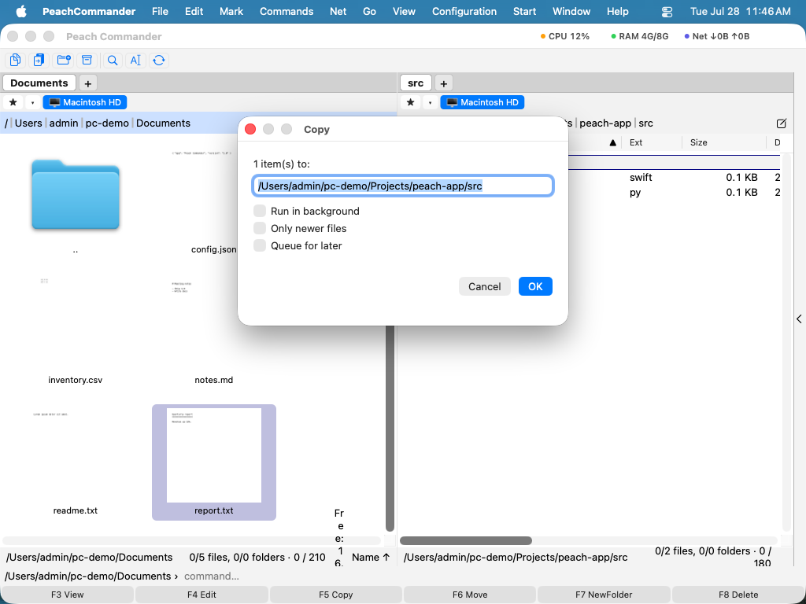

Bestanden kopiëren
Peach Commander is opgebouwd rond twee panelen naast elkaar: het ene bevat de bestanden waarmee je werkt, het andere is de bestemming. Kopiëren neemt wat in het actieve paneel geselecteerd is en plaatst een duplicaat in de map die in het andere paneel wordt getoond, waarbij de originelen op hun plaats blijven. Dit is de snelste manier om bestanden en mappen tussen twee locaties te dupliceren zonder te slepen.
Een selectie naar het andere paneel kopiëren
- Open in het ene paneel de map met de items die je wilt kopiëren.
- Open in het andere paneel de map waar de kopieën naartoe moeten.
- Selecteer de bestanden en mappen om te kopiëren. Als er niets is geselecteerd, wordt het item onder de cursor gebruikt.
- Druk op F5. Het kopieervenster opent, met het bestemmingspad al ingevuld.

(Afbeelding: Het kopieervenster. Het doelpad wijst naar het andere paneel; gebruik de opties om het kopiëren fijn af te stemmen.)- Pas indien nodig de bestemming aan en bevestig vervolgens om het kopiëren te starten.
Kopieeropties
Voordat je bevestigt, kun je wijzigen hoe het kopiëren zich gedraagt:
- Alleen nieuwere bestanden — slaat elk item over waarvan de kopie al bestaat en even oud of nieuwer is, zodat alleen gewijzigde bestanden worden bijgewerkt.
- Op achtergrond uitvoeren — geeft de kopieerbewerking door aan de achtergrondoverdrachtsbeheerder in plaats van het voortgangsvenster te tonen.
- In wachtrij voor later — voegt de kopieerbewerking toe aan de achtergrondwachtrij zonder haar al te starten.
- Hernoemmasker — typ een jokertekenpatroon in het doelveld (bijvoorbeeld
*.bak) om items te hernoemen terwijl ze worden gekopieerd.
Twee instellingen gelden voor elke kopieerbewerking en staan in Configuratie ▸ Instellingen… ▸ Kopiëren/verwijderen: het behouden van datums, machtigingen en andere attributen (standaard aan) en een snelheidslimiet die voorkomt dat een grote kopieerbewerking je schijf of netwerkverbinding verzadigt. Voor taken in de wachtrij, zie Overdrachten op de achtergrond.
Voortgang
Een voortgangsvenster toont de hele taak met aantallen bestanden en bytes, de overdrachtssnelheid en de resterende tijd; als een bestand meer dan een moment duurt, toont een tweede balk erboven dat bestand. Je kunt op elk moment pauzeren en hervatten. Het snelheidsmenu naast de knoppen begrenst deze kopieerbewerking meteen (1, 5 of 20 MB/s, of volle snelheid) zonder de limiet in Configuratie te wijzigen; Standaard gaat terug naar die limiet. Achtergrond geeft de lopende kopieerbewerking door aan de achtergrondoverdrachtsbeheerder: het venster sluit en de kopieerbewerking gaat daar verder.
 (Afbeelding: Het voortgangsvenster dat tijdens een kopieer- of verplaatsbewerking wordt getoond.)
(Afbeelding: Het voortgangsvenster dat tijdens een kopieer- of verplaatsbewerking wordt getoond.)
Bestanden die al bestaan afhandelen
Als een kopieerbewerking een bestaand bestand zou vervangen, stopt Peach Commander en vraagt wat te doen. Een voorbeeld van beide bestanden helpt je te beslissen.
 (Afbeelding: Het overschrijfvenster vergelijkt het bestaande bestand met het bestand dat wordt gekopieerd.)
(Afbeelding: Het overschrijfvenster vergelijkt het bestaande bestand met het bestand dat wordt gekopieerd.)
Je keuzes zijn onder andere:
- Overschrijf het bestaande bestand, of Overschrijf alles om dat op elk resterend conflict toe te passen.
- Sla over dit bestand, of Sla alles over wat er aan conflicten resteert.
- Hernoem de binnenkomende kopie automatisch zodat beide bestanden behouden blijven.
- Voeg toe de binnenkomende gegevens aan het eind van het bestaande bestand.
- Overschrijf alleen wanneer de bron nieuwer of groter is dan het bestaande bestand.
Sneltoetsen
| Actie | Toets |
|---|---|
| Selectie naar het andere paneel kopiëren | F5 |
| Kopiëren in dezelfde map (een hernoemd duplicaat maken) | Shift+F5 |
| Open de achtergrondoverdrachtsbeheerder | Cmd+Shift+B |
Opmerkingen
- Kopiëren tussen twee locaties op dezelfde schijf gebruikt een snelle kloon wanneer de schijf dit ondersteunt, zodat grote bestanden vrijwel direct kopiëren en weinig extra ruimte gebruiken.
- Mappen worden gekopieerd met alles wat erin zit.
- Om bestanden te verplaatsen in plaats van te kopiëren, gebruik je F6. Om taken in de wachtrij te bekijken of te beheren, open je de achtergrondoverdrachtsbeheerder met Cmd+Shift+B.